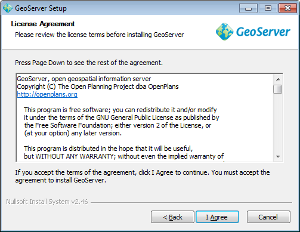
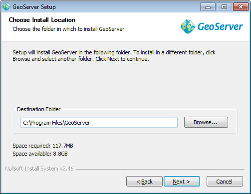
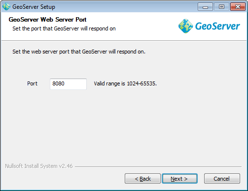

Windows Installer¶
윈도우 인스톨러로 여러분의 시스템에 GeoServer를 쉽게 설치할 수 있습니다. 환경설정 파일을 편집하거나 커맨드 라인을 입력할 필요 없이 윈도우 GUI를 통하여 모든 설치가 이루어집니다.
GeoServer 다운로드 페이지(http://geoserver.org/display/GEOS/Download)로 이동합니다.
설치하고자 하는 GeoServer 버전을 선택합니다. 잘 모르겠다면 http://geoserver.org/display/GEOS/Stable 에서 안정(stable) 버전을 다운로드합니다.
윈도우 인스톨러(Windows installer) 링크를 클릭하여 다운로드합니다.
윈도우 인스톨러 다운로드
다운로드를 완료하면 파일을 더블클릭하여 설치를 시작합니다.
환영 화면(Welcome screen)에서 Next 버튼을 클릭합니다.
환영 화면
라이센스를 읽은 다음 I Agree 버튼을 클릭합니다.
GeoServer 라이센스
설치할 디렉터리를 선택한 다음 Next 버튼을 클릭합니다.
GeoServer 설치 디렉터리
시작 메뉴(Start Menu) 디렉터리의 명칭과 위치를 선택한 다음 Next 버튼을 클릭합니다.
시작 메뉴 위치
유효한 Java Runtime Environment (JRE)의 경로를 입력하십시오. GeoServer를 실행하려면 사용가능한 JRE가 필요므로 이 과정이 필요합니다. 인스톨러가 여러분의 시스템에서 %JAVA_HOME% 변수에 포함된 경로를 자동으로 표시합니다. 이 변수가 정의되지 않았다면, 여러분의 컴퓨터에 JRE가 설치되지 않았을 수 있습니다. 이럴 경우 http://www.oracle.com/technetwork/java/javase/downloads/index.html 에서 JRE를 다운로드 및 설치한 다음, GeoServer 인스톨러를 재시작합니다. JRE 경로 설정이 완료되면 Next 버튼을 클릭합니다.
주석
올바른 경로의 예는 다음과 같습니다. C:\Program Files\Java\jre6
경고
JRE 경로에 \bin 을 포함시키면 안 됩니다. 만일 javaw.exe 의 경로가 C:\Program Files\Java\jre6\bin\javaw.exe 라면, C:\Program Files\Java\jre6 로 경로를 설정하십시오.
주석
Oracle Java SE 6 버전 이상을 강력히 추천합니다. (GeoServer 2.2.x부터는 Oracle JRE 5를 지원하지 않습니다.) Java Development Kit (JDK)은 GeoServer를 실행하는 데 필요하지 않습니다. Java와 GeoServer의 관계에 대해 자세히 알고 싶다면 Java Considerations 섹션을 참조하십시오.
유효한 JRE 선택
GeoServer 데이터 디렉터리를 입력하거나 기본값을 선택합니다. 이전 버전의 GeoServer 사용자는 사용하고자 하는 데이터 디렉터리가 이미 있을 수 있습니다. 처음으로 GeoServer를 설치하는 사용자는 Default data directory를 선택합니다. 완료했으면 Next 버튼을 클릭합니다.
GeoServer 데이터 디렉터리 설정
GeoServer 관리자(administration)의 사용자명(username) 및 비밀번호(password)를 입력합니다. GeoServer의 Web Administration Interface는 관리를 위한 인증을 요구하는데, 이때 입력하는 정보가 관리자 인증 정보가 됩니다. 기본값은 admin / geoserver입니다. 기본값을 변경하도록 추천하지만 필수 사항은 아닙니다. 완료되었으면 Next 버튼을 클릭합니다.
GeoServer 관리자의 사용자명 및 비밀번호 설정
GeoServer가 응답할 포트(port)를 입력하십시오. 이 포트는 GeoServer Web Administration Interface의 위치는 물론, GeoServer의 Web Map Service와 Web Feature Service의 종단점(endpoints)에도 영향을 미칩니다. 기본 포트는 8080번이지만 사용중이 아닌 유효한 포트도 사용할 수 있습니다. 완료되었으면 Next 버튼을 클릭합니다.
GeoServer 포트 설정
GeoServer를 수동으로 실행할지, 윈도우 서비스(service)로 등록할지 선택합니다. 수동으로 실행하면, GeoServer는 현재 사용자 계정에서 일반 응용 프로그램처럼 실행됩니다. 서비스로 등록하면 윈도우 서비스에 통합되어 관리가 쉬워집니다. 서버에서 실행하거나, 서비스로 GeoServer를 관리하려면 Install as a service를 선택합니다. 그렇지 않으면 Run manually를 선택합니다. 완료되었으면 Next 버튼을 클릭합니다.

GeoServer를 윈도우 서비스로 등록
현재까지 설정한 정보를 확인한 후 변경이 필요하면 Back 버튼을 클릭하여 수정합니다. 설정한 정보를 그대로 사용하려면 Install 버튼을 눌러 설치를 시작합니다.
설정 확인
GeoServer가 여러분의 컴퓨터에 설치될 것입니다. 설치가 완료되면 Finish 버튼을 눌러 인스톨러를 종료합니다.
만약 GeoServer를 서비스로 등록했다면 이미 서비스가 시작되었을 것입니다. 그렇지 않으면 윈도우 시작 메뉴의 GeoServer 폴더로 이동한 다음 Start GeoServer를 클릭하여 실행합니다.
GeoServer Web Administration Interface에 접속하려면 웹브라우저에서 http://[SERVER_URL]:[PORT]/geoserver/ (예: http://localhost:8080/geoserver/) 페이지로 이동합니다.
브라우저에서 다음 화면이 보인다면, 축하합니다. GeoServer가 성공적으로 설치되었습니다!
GeoServer 설치 및 실행 성공